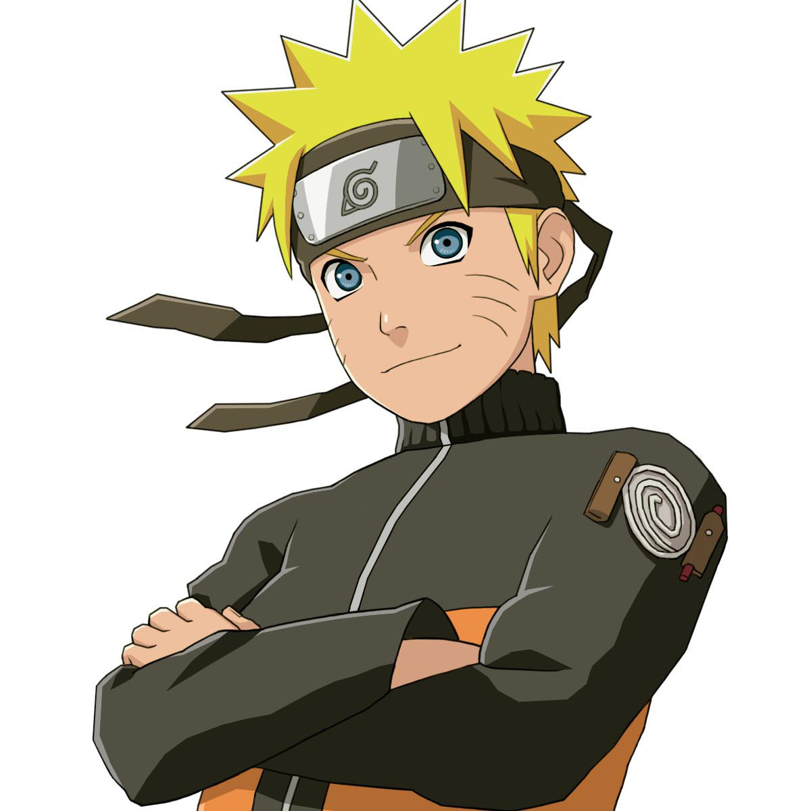

Что такое наруто
«Наруто» (яп. NARUTO - ナルト -) — манга Масаси Кисимото в жанре сёнэн. Главным её героем является Наруто Удзумаки, шумный и непоседливый ниндзя-подросток, который мечтает достичь всеобщего признания и стать Хокагэ — главой своего селения и сильнейшим ниндзя. Чтобы добиться уважения окружающих, ему предстоит пройти через тысячи препятствий: экзамены ниндзя, различные миссии и сражения.
Выпускалась с 21 сентября 1999 года по 10 ноября 2014 года японским издательством Shueisha в журнале Weekly Shonen Jump
В аниме-экранизацию входят два телесериала, одиннадцать анимационных фильмов и восемь OVA. На основе манги и аниме были созданы также видеоигры, романы («лайт-новел») и коллекционная карточная игра.